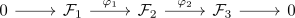
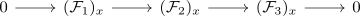
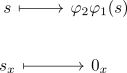

exactness of sheaves and exactness on stalks
Proposition
Let $\mathcal{A}$ be a grothendieck category, $X$ a topological space and $\mathcal{F}_1,\mathcal{F}_2, \mathcal{F}_3$ be $\mathcal{A}$ valued sheaves and

a sequence (see: zero sheaf)
TFAE:
- for arbitrary $x \in X$, the induced sequence by the stalk functor

is exact
- the sequence
is exact
Proof
1) $\implies$ 2)
slightly sloppy: assuming concrete category:
$\mathrm{im} \subseteq \mathrm{ker}$
Assume $s \in \mathcal{F}_1(O)$, then for each $x \in O$ it follows, that

Taking $\varphi_2 \varphi_1(s) = 0$ is the only section making this diagram commute: By assumption, for each $x \in X$ there exists an open subset $U_x$ such that
as both $\varphi_1 \varphi_2(s)$ and $O$ have the same stalk
applying glueing for $0_{U_x}$ gives $0$
b)
Let $s \in \mathcal{F}_2(O)$ such that $\varphi_2(s) = 0$. Then for each stalk at $x \in X$ it holds, that
Thus there exists $t_x \in \mathcal{F}_x$ with $\varphi_1(t_x) = s_x$. Choose a representative $t_{U_x}$, then there exists for $\varphi_1(t_{U_x})$ an open subset $O_x$ such that
(cf. subset of coinciding stalks as open set)
2) $\implies$ 1)
a)
stalk functor as right exact functor
b)
stalk functor for a grothendieck category as left exact functor